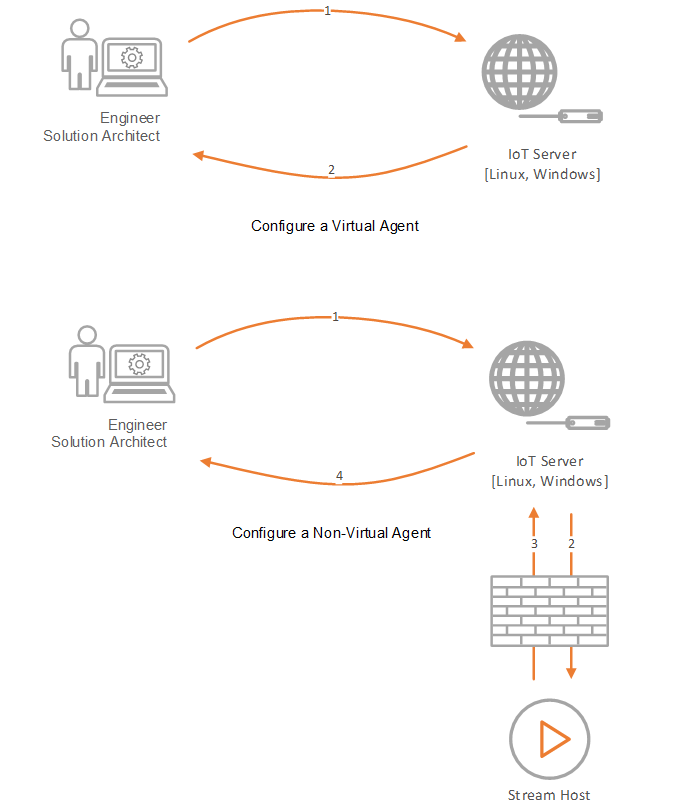

Virtual vs Non-Virtual Agents
There can be two types of Agents in Data Streams; Virtual and Non-Virtual Agents. When packaging an Agent using the Stream Integration Manager, it is important to specify if an Agent is Virtual by making sure that the Virtual checkbox is correctly ticked.
Virtual Agents
A Virtual Agent is an Agent that is not bound to a certain environment to be able to function, for example, the Azure SQL Listener is an Agent which can be configured anywhere as it will always have access to the globally available Azure SQL Server, which it needs to integrate with.
Non-Virtual Agents
An Agent can be classified as Non-Virtual if it relies on a specific environment to function. Non-Virtual Agents need to interact with a system that is only available in a specific environment, for example, the SQL Server Listener. The SQL Server Listener is an Agent that can only be configured while it is on the same local area network as the SQL Server instance it needs to connect to.

As shown in the diagram above, even though both Virtual and Non-Virtual Agents ultimately run on the Stream Host, there is a considerable difference in how they are handled at design time. A Virtual Agent can be configured even if no Stream Host is online, but this is not possible for a Non-Virtual one. Virtual Agents are also very fast as the engine doesn't have to go all the way to the Stream Host to configure them and this results in a smoother user experience.
Note
Virtual Agents can be configured even if there is no Stream Host online, but Non-Virtual Agents require a Stream Host to be online.
Last modified: May 13, 2025